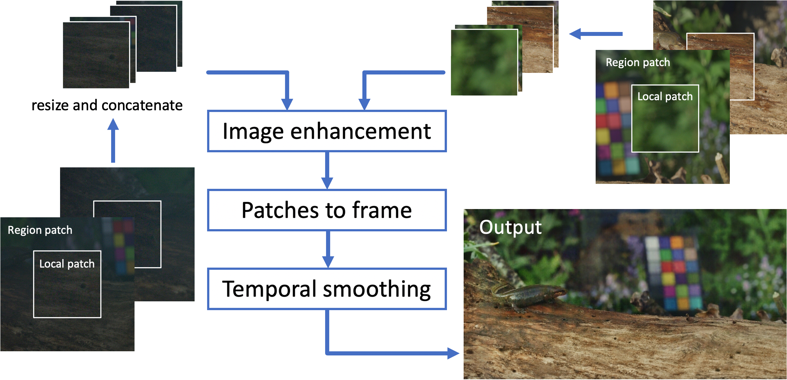

Image and Video Denoising, Colorization, Enhancement
University of Bristol
University of Bristol


Aim
To research and deliver new methods, algorithms, architectures and loss functions for content enhancement, relevant to archives and to other challenging acquisition environments (eg natural history). Particular challenges to consider will include: Colorisation of video content; Low light and denoising workflows.

Contextual Colorization and Denoising for Low-Light Ultra High Resolution Sequences
Low-light image sequences generally suffer from spatiotemporal incoherent noise, flicker and blurring of moving objects. These artefacts significantly reduce visual quality and, in most cases, post-processing is needed in order to generate acceptable quality. Most state-of-the-art enhancement methods based on machine learning require ground truth data but this is not usually available for naturally captured low light sequences. We tackle these problems with an unpairedlearning method that offers simultaneous colorization and denoising. Our approach is an adaptation of the CycleGAN structure. To overcome the excessive memory limitations associated with ultra high resolution content, we propose a multiscale patch-based framework, capturing both local and contextual features. Additionally, an adaptive temporal smoothing technique is employed to remove flickering artefacts. Experimental results show that our method outperforms existing approaches in terms of subjective quality and that it is robust to variations in brightness levels and noise.
Framework

Result
Left to right: Original low-light seqeunce, enhanced seqeunces without and with temporal smoothing.
Citation
@INPROCEEDINGS{Anantrasirichai:Contextual;2021,
author={N. {Anantrasirichai} and D. R. {Bull}},
booktitle={arXiv:2101.01597},
title={Contextual colorization and denoising for low-light ultra high resolution sequences},
year={2021},}